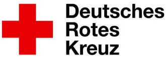

Bergwacht Zollernalb – Drehplan & Konzept
Fiaccolata ist eine Initiative des DRK-Landesverbands Baden-Württemberg. Eine Fackel wandert vom 6. bis 11. Juni 2026 durch verschiedene Kreisverbände und symbolisiert den Zusammenhalt des DRK – über alle Ebenen hinweg: Hauptamt und Ehrenamt, verschiedene Gliederungen und Ortsvereine.
Die Fackel wird nicht einfach „übergeben" – sie wird erlaufen, erradelt, erwandert. Überall dort, wo sie ankommt, entsteht eine kleine Geschichte von Menschen, die sich für andere einsetzen.
Die Bergwacht Zollernalb dokumentiert die fünf Tage mit Instagram-Videos – wir übernehmen Dreh, Schnitt und die Gesamtorganisation. Jeder Tag zeigt die Arbeit verschiedener Organisationen des DRK-Kreisverbands Zollernalb.
🔥 Team: Alle zusammen (Ankommen)
Video: Übergang (POV-Fackel mit Brust-Kamera) zu verschiedenen Orten. Dann: Gruppe mit Fackel, normal gefilmt, präsent und bereit.
Ort: Markante Orte in Zollernalb (z.B. Burg, Marktplatz)
Caption (Einblendung): „Die Fackel ist da. Wir machen mit. 🔥"
🚑 Team: Rettungsdienst, ILS / Leitstelle
Video: Übergang (POV-Fackel). Dann: Schnelle Schnitte von eurer Arbeit – Fahrzeuge, Leitstelle, Einsatzmittel, Menschen bei dem, was sie tun.
Ort: Rettungswache, Leitstelle oder euer Standort
Caption (Einblendung): „Wir fahren raus für euch. Jeden Tag. 🚑"
🏔️ Team: Bergwacht Zollernalb
Video: Übergang (POV-Fackel über Berg/Felswand). Dann: Schnitte – Ausrüstung, Menschen in Aktion, Höhe, Technik, Konzentration.
Ort: Schlossfelsen, Traufgang, Traufkante oder andere markante Höhen
Caption (Einblendung): „Das ist unsere Arbeit. Und unser Ehrenamt. 🏔️"
🔥 Teams: Wasserwacht, Motorradstaffel, Drohnenstaffel, Ortsverein
Video: Übergang (POV-Fackel schnelle Schnitte zwischen Teams). Dann: Jedes Team gezeigt bei seiner Arbeit – Boot, Motorrad, Drohne, Ortsverein. Normal gefilmt, professionell, fokussiert.
Ort: Verschiedene Orte – jedes Team an seinem Standort
Caption (Einblendung): „Verschiedene Teams. Ein DRK. 🔥"
🔥 Team: Alle Organisationen zusammen
Video: Übergang (POV-Fackel geht weiter, Erinnerungsblitze aus 4 Tagen). Dann: Alle Teams präsent, die Fackel wird kraftvoll zur nächsten KV weitergegeben.
Ort: Panorama oder markanter Ort in Zollernalb
Caption (Einblendung): „Bis zur nächsten Station. Das Feuer brennt weiter. 🔥"
Zum Dreh, zur Planung & eure Ideen:
Laura Sauer
Bergwacht Zollernalb
laura.sauer@drk-zollernalb.de
Tel: 0178 4487753